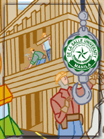

| ITC's
New Home
By:
Precious Anne L. Taliwaga
One
of the major changes that occurred this school year is the
transfer of the College of Computer Studies (CCS) and the
Information Technology Center (ITC) to De La Salle University-Manila
(DLSU-M) from the Professional Schools, Inc. (PSI). Now, the
lone component of PSI is the Graduate School of Business (GSB).
The transfer presents many questions, as far as ITC is concerned. One, will ITC have our own
ITP Manual or will we be incorporated with the existing DLSU-Manila Faculty Manual? Second,
if the ITP Manual is integrated with the DLSU-Manila Manual, will we have our own section? Third,
should we join the Faculty Association? How much will ITC gain or lose if we do? It is also
timely that the transfer coincided with the bargaining for the Faculty Manual.
On the lighter side, now, we have to prove our athletic prowess
if we want to show our mettle in the annual faculty sports
fest.
Come to think of it, we ITPs have shown our flexibility in coping up with the changing times.
We take it to heart when we say continuous improvement. At times, we also show the different
campuses that we set the example for our contemporaries, especially in the information technology
field.
ITP
Assembly Officers Updates
The ITP Assembly elected a new set of officers for a 2-year
term spanning the school years 2004-2005 and 2005-2006. The
current officers are:
President: Catalina M. Quiogue (SMO)
Vice-President: Robert T. De Jesus (SMO)
Secretary: Precious Anne L. Taliwaga (DOCU)
Treasurer: Ma. Lourdes Bernadette M. Ibay
(CFO)
Grievance Officer: Amor Calvin. B. Camba
(CFO)
ITP Representatives: Patricia B. Antonio
(PRIO)
Francis Mark D. Santos (DOCU)
The officers are guided with the thrust “Transparency
through information dissemination”. The minutes of the
officers' meetinsg are posted for every body to give comments
on before the approval of the minutes in the next meeting.
Everyone is also encouraged to give inputs for the agenda
of the meeting.
The focus of the meetings is the formulation of proposals
for the coming Faculty Manual negotiations. The effectivity
of the current ITC Manual under PSI is until this school year.
Many ITPs contribute proposals. The merit of these ideas is
deliberated in the meeting and the rationale for proposing
them are drafted. CMQ is tasked to represent the ITPs in the
actual negotiation. In cases where CMQ is unavailable to attend,
RTD will be official substitute. - by Catalina M. Quiogue
Newbies
on the Block
Delford S. Gamayo
I started working here in De La Salle University last Sept
8, 2003 as Lab Assistant. I was so glad to work here because
all the faculties, staff and some of the students I met are
very friendly. But when I started as PC Engineer of ITC-CFO,
I can’t express what I feel because another happiness
in my life happened that time. Being a part of the team was
my dream even when I was still a Lab Assistant. Sir Boyet
introduced me to all of the ITC staff and they all welcomed
me as a new member of the team. I’m hoping that this
would be the first and last company I’ll be working
for because all the ITC Staff are very supportive to each
other. And I promised to myself to do my best, to do all my
tasks and responsibilities as part of the team.
Arnel Roland T. Garing
I’m really thankful for being given the chance to be
a PC Engineer here in De La Salle University but, first, I’m
also thankful for being given the opportunity to be a Computer
Laboratory Assistant. It really helped me a lot to improve
my talents and skills, and to improve my social life. It was
a great moment in my life. And now, as a PC Engineer here
in ITC, I consider it as a new great moment in my life. Why?
Because of all the good and supporting members of the Center.
They keep on helping me in improving my weakness. They are
always there to support me. Thanks, thanks, thanks. In return,
I will not waste your efforts. I will do all my best to contribute,
support and attain our goals in ITC. As a group, you can lean
on me. I hope our relationship inside the team will stay the
same forever.
Rhamille T. Golimlim
After having been contracted for a project with the DLSU Central
Purchasing Station, I have personally felt how it is to be
a part of, and work with ITC even before I start working here
as an employee. That experience made me feel intimidated as
well as challenged with the professionalism and dedication
showed by its employees. When I was informed that ITC is giving
me an opportunity to work with them, I was hesitant at first
for the reason that I was somewhat afraid that my young career
would be out of their league, but then again, when I thought
that this kind of opportunity on working with a very conducive
environment, great people to work with, a very good career
path ahead and the stability of the institution itself, from
that point on, I knew that I made a right choice. It would
be my privilege to be a part of this team and to be able to
contribute in achieving the goal of the institution. Clearly
ITC is not just a place for us to grow onto but eventually
for it to grow into each and everybody.
Joel M. Santiago
It has been a welcome change to get out of the corporate world
and back into the academe. Noisy corridors, younger crowds,
casual clothes, drinking fountains, student prices, etc...
Add the fact that I know a couple of ITC people from past
climbs, the transition has been smooth and working here has
been enjoyable. So far, so good.
Jason D. Valenzuela
First of all, I’d like to thank our Lord GOD for answering
my prayers, to work in a prestigious company, (DLSU, of course)
where it has good & nice employees, a pleasant environment,
friendly and supportive co-employees. I cannot ask for anything
more having had a prayer like this answered. Counting my service
as Computer Lab Technician, I have been employed in this company
for one year. Wow! I enjoy it. I’m learning a lot of
things enriching my work experience. Plus, it’s nice
to be back in a learning environment with others who share
similar background. I greatly appreciate the quality of work
that DLSU has offered me. Everybody is easy to work with and
professional in every way. I hope our professional experience
continues for a long time. GODSPEED everyone. Thanks again.
|